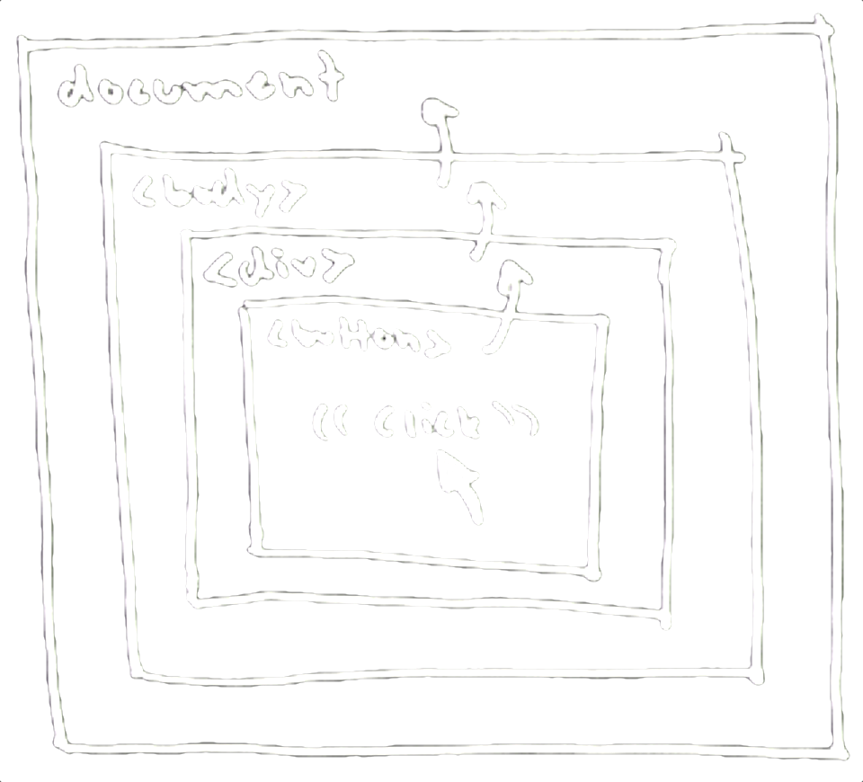

class: front-page # Vanilla JS ## Frontendprogrammet <span class="today-date"></span> --- class: agenda # Plan for dagen * 09.00 Show and tell med Øyvind x2 * 09.30 JavaScript * 10.00 Funksjonell programering * 10.30 DOM-api * 11.00 Prototypes * 11.30 Promises * 12.00 Lunch --- class: middle center .card[ .picture[  ] .name[Øyvind Skaar] .title[Systemutvikler] .department[Technology] .phone[909 43 920] .email[oyvind.skaar@bekk.no] ] .card[ .picture[  ] .name[Øyvind Midtbø] .title[Systemutvikler] .department[Technology] .phone[995 15 434] .email[oyvind.midtbo@bekk.no] ] --- class: middle center # javaScript --- # Variabler ```javascript var k = 1; let e = 1; const n = 1; ``` --- # Var ``` var n = 1; if(true) { n; // 1 } n; // 1 ``` -- ``` var n = 1; function() { n; // 1 } n; // 1 ``` --- # Var ``` if(true) { var n = 1; } n; // 1 ``` -- ``` if(true) { var n; } n; // ReferenceError: n is not defined ``` --- # Var ``` if(false) { var n = 1; } n; // undefined ``` -- ``` var n; if(false) { n = 1; } n; // undefined ``` --- # Let ``` var x = true; let y = true; x // true y // true ``` ??? Funker nesten likt som var -- ``` if (true) { var x = true; } x // true if (true) { let y = true; } y // ReferenceError: y is not defined ``` ??? Men er block-scoped, ikke function-scoped --- # Let ``` { let x = true; } x // ReferenceError: x is not defined ``` ??? Kan brukes i fake scopes { ... } --- # Let ``` function addListeners() { var listElements = document.querySelectorAll('li'); var l = listElements.length; for (var i = 0 ; i < l ; i++) { // A listElements[i].addEventListener('click', function (e) { console.log(listElements[i].innerHTML); // B }); } } ``` --- class: middle center  --- # Let ``` function addListeners() { var listElements = document.querySelectorAll('li'); var l = listElements.length; for (let i = 0 ; i < l ; i++) { // A listElements[i].addEventListener('click', function (e) { console.log(listElements[i].innerHTML); // B }); } } ``` --- # Const ``` if (true) { const x = true; } x // ReferenceError: x is not defined ``` ??? Også block-scoped -- ``` const x = 'I am a const'; x = 'Cant change you?'; // SyntaxError: 'constString' is read-only ``` ??? konstanter, kan ikke endres -- ``` const arr = [1, 2]; arr[0] = 0; arr[0] // 0 ``` ??? Men du kan fortsatt endre innholdet Åpenbar verdi med let & const: kommuniserer til andre som leser koden hva som er meningen med en variabel --- # Oppgave Få testene til å kjøre http://tddbin.com/#?kata=es6/language/block-scoping/let http://tddbin.com/#?kata=es6/language/block-scoping/const --- class: middle center # Functions --- # Functions ``` function myFunction() { } var myFunction = function() { } var myFunction = function myFunction() { } ``` --- # Functions ``` test(); var n = 1; function test() { console.log(n); } ``` -- ``` undefined ``` ??? Legg merke til at det ikke blir ref error -- ``` var n = 1; test(); function test() { console.log(n); } ``` -- ``` 1 ``` --- # Functions ``` test(); var n = 1; var test = function() { console.log(n); } ``` -- ``` // ReferenceError: test is not a function ``` ??? Legg merke til at det ikke blir ref error -- ``` var test = function() { console.log(n); } test(); var n = 1; ``` -- ``` undefined ``` --- # Functions ``` function doSomething() { } function doThisOtherThing() { } document.querySelector('.someting').addEventListener('click', function() { var n = doSomething(); var b = doThisOtherThing(); }); ``` --- # Arrow functions ``` [1,2,3].map(function(n) { return n * 2; }); ``` -- ``` [1,2,3].map(n => n * 2); ``` --- # Arrow functions ``` [1,2,3].reduce(function(sum, value) { return sum + value; }); ``` -- ``` [1,2,3].reduce((sum, value) => sum + value); ``` --- # Arrow functions ``` [1,2,3].map(() => 1); ``` --- # Arrow functions et parameter ``` a => a() ``` flere parameter ``` (a,b) => a+b ``` ingen parameter ``` () => a(); ``` ??? Siste resultat er automatisk returnert --- # Multiline arrow functions ``` // et parameter let myFunc = a => { let b = a(); return b; } ``` ``` // flere parameter let myFunc = (a,b) => { let c = a+b; return b; } ``` ``` // ingen parameter let myFunc = () => { let b = a(); return b; } ``` ??? Må manuellt returnere --- # Metode functions ``` var obj = { myFunction: function() { }, myOtherFunction: function() { } } ``` -- ``` var obj = { myFunction() { }, myOtherFunction() { } } ``` --- # Oppgave Få testene til å kjøre http://tddbin.com/#?kata=es6/language/arrow-functions/basics --- class: middle center # this --- # this ``` var myFunction = function() { return this; } object.myMethod = function() { return this; } ``` ??? Vi skiller mellom hva som er funksjoner og hva som metoder funksjoner er løse definerte funksjoner metoder er funksjoner derfinert på et objekt -- ``` myFunction(); // window object.myMethod(); // object ``` ??? Det er objektet vi kaller metoden på som er konteksten -- ``` var someFunction = object.myMethod; object.myMethod(); // window ``` ??? Når vi lager metoden som en variabel og kaller denne vil konteksten endre seg fordi det globale objektet er alltid window --- # this ``` var somefunction = function(callback) { callback(); // window } somefunction(function() { return this; }); ``` -- ``` var somefunction = function(callback) { callback(); // ??? } object.myMethod = function() { return this; }; somefunction(object.myMethod); ``` --- # this ``` var somefunction = function(callback) { callback(); // window } somefunction(function() { return this; }); ``` ``` var somefunction = function(callback) { callback(); // window } object.myMethod = function() { return this; }; somefunction(object.myMethod); ``` --- # this ``` var myFunction = function() { return this; } myFunction(); // window ``` -- ``` myFunction.call('kent'); // kent myFunction.apply('kent'); // kent ``` -- ``` myFunction.call('kent', 'argument1', 'argument2', 'argument3', ...); ``` -- ``` myFunction.apply('kent', ['argument1', 'argument2', 'argument3', ...]); ``` --- # This ``` var myFunction = function() { return this; } myFunction(); // window ``` -- ``` var someOtherFunction = myFunction.bind('kent'); someOtherFunction(); // 'kent' ``` -- ``` myFunction() === myFunction().bind('kent'); // false ``` --- # This ``` var that = this; setTimeout(function() { that.doSomething(); that.value = 4; }, 1000); ``` -- ``` setTimeout(() => { this.doSomething(); this.value = 4; }, 1000); ``` ??? Context inne i en arrow function er det samme som der den blir deklarert --- class: middle center <iframe src="https://player.vimeo.com/video/105743348" width="800" height="450" frameborder="0" webkitallowfullscreen mozallowfullscreen allowfullscreen></iframe> --- class: middle center # DOM-api --- # DOM-api ```javascript // #someid .someclass p var els = [] var classList = document.getElementById('someid').getElementsByClassName('someclass'); for (var i = 0; i < classList.length; i++) { var elementList = classList[i].getElementsByTagName('p'); for (var n = 0; n < elementList.length; n++) { els.push(elementList[n]); } } ``` -- ```javascript document.querySelector('#someid .someclass p'); // HTMLelement document.querySelectorAll('#someid .someclass p'); // NodeList of HTMLelements ``` --- # DOM-api ```javascript document.querySelectorAll('div').forEach(() => {}); ``` -- Uncaught TypeError: document.querySelectorAll(...).forEach is not a function(…) -- ```javascript String(document.querySelectorAll('div')) // [object NodeList] ``` --- #Konvertere NodeList ```javascript var divList = document.querySelectorAll('div'); var divArray = Array.prototype.slice.call(divList); ``` ```javascript var divList = document.querySelectorAll('div'); var divArray = []; for (var i = 0; i < divList.length; i++) { divArray.push(divList[i]); } ``` ```javascript var divList = document.querySelectorAll('div'); var divArray = []; for (var i = 0; i < divList.length; i++) { divArray[i] = divList[i]; } ``` --- <div class="browser"> <div class="title">Convert Nodelist to Array · jsPerf</div> <div class="url">http://jsperf.com/convert-nodelist-to-array</div> <iframe src="http://jsperf.com/convert-nodelist-to-array" /> </div> --- #Løpe over NodeList ```javascript var divList = document.querySelectorAll('div'); Array.prototype.forEach.call(list, () => {}); ``` ```javascript var divList = document.querySelectorAll('div'); for (var i = 0; i < divList.length; i++) { divList[i]; } ``` ```javascript var divList = document.querySelectorAll('div'); for (var item of divList) { item; } ``` --- <div class="browser"> <div class="title">Convert Nodelist to Array · jsPerf</div> <div class="url">https://jsperf.com/forrreach/7</div> <iframe src="https://jsperf.com/forrreach/7" /> </div> --- #Event ```javascript var container = document.querySelector('#buttons'); container.addEventListener('click', function() { // gjør noe spennende }); ``` --- #Oppgave Få testene til å kjøre http://jsbin.com/povoyoz/20/edit?js,console http://jsbin.com/wepoceh/14/edit?js,console --- # Event ```javascript var container = document.querySelector('#buttons'); container.addEventListener('click', function(event) { // gjør noe spennende }); ``` --- # Event ```javascript var container = document.querySelector('#buttons'); container.addEventListener('click', function(event) { event.target // A reference to the target to which the event was originally // dispatched Event.currentTarget // A reference to the currently registered target for the event event.preventDefault() // Cancels the event (if it is cancelable) event.stopPropagation() // Stops the propagation of events further along in the DOM }); ``` -- ##Les mer om Event på Mozilla Developer Network https://developer.mozilla.org/en-US/docs/Web/API/Event --- class: middle center  --- class: cols three # Event Propagation <div class="col" style="width:59%">  </div> <div class="col event-propagation-example" style="text-align:center"> <ul> <li>document</li> <li>body</li> <li>main</li> <li>div</li> <li><button class="btn loud">Klikk</button></li> </ul> </div> --- # Event Propagation ## `event`-objektet ```javascript var container = document.querySelector('#buttons'); container.addEventListener('click', function(event) { var element = event.target; if(element.nodeName === 'BUTTON') { handleClick(); } else { // do nothing } }); ``` --- <div class="browser"> <div class="title"> delegate </div> <div class="url">https://www.npmjs.com/package/delegate</div> <div class="content"> </div> </div> --- class: middle center # Promise --- exclude: true class: middle <blockquote style='font-size: 2em'> The Promise object is used for deferred and asynchronous computations. A Promise represents an operation that hasn't completed yet, but is expected in the future. </blockquote> .source[https://developer.mozilla.org/en-US/docs/Web/JavaScript/Reference/Global_Objects/Promise] --- # Promise ``` noeAsync(() => { // Gjør noe gøy }); ``` ??? klassisk metode med callback -- ``` noeAsync(() => { noeAnnetAsync(() => { noeTredjeAsync(() => { noeFjerdeAsync(() => { // Gjør noe gøy }); }); }) }) ``` ??? Kan fort bli stygt med callback i parallel --- # Promise ``` noeAsync().then(() => { // alt gikk bra }).catch(() => { // noe gikk feil }); ``` -- ``` noeAsync().then(() =>{ // alt gikk bra }, () =>{ // noe gikk feil }); ``` ??? Ikke anbefalt syntax, hvis noe feiler i den første funksjonen vil ikke den andre bli kalt -- ``` noeAsync() .then(noeAnnetAsync) .then(noeTredjeAsync) .then(noeFjerdeAsync) .catch(taIMotFeilen); ``` --- # Promise ## Ufullstendig liste over custom implentasjoner * [jQuery deferred.promise](https://api.jquery.com/deferred.promise/) * [then/promise](https://github.com/then/promise/blob/master/src/core.js) * [kriskowal/q](https://github.com/kriskowal/q/blob/v1/design/README.js) * [petkaantonov/bluebird](https://github.com/petkaantonov/bluebird) ??? Alle implementerer samme konseptet, men har forskjellig funksjonalitet og api --- # Promise ``` new Promise((resolve, reject) => { // Gjør noe spennende. // kall resolve hvis alt gikk bra // kall rejecte hvis noe feilet }); ``` --- # Promise ``` function hentTall() { return new Promise(function(resolve, reject) { setTimeout(() => { var tall = Math.random() tall > 0.5 ? resolve(tall) : reject(tall); }, 1000); }); } ``` Hent et tilfelldig tall om 1. sekund, reject om det er under 0,5 -- ``` hentTall().then(tall => { // over 0.5 }).cache(tall => { // under 0.5 }); ``` --- exclude: true # Promise ``` new Promise((resolve, reject) => { setTimeout(resolve, 2000); }) .then( () => {throw 'up'}, error => console.log('then', error) ) .catch( error => console.log('catch', error) ); ``` -- exclude: true ``` // catch up ``` --- exclude: true # Promise ``` new Promise((resolve, reject) => { setTimeout(resolve, 2000); }) .then( () => {throw 'up'}, error => console.log('then', error) ) .catch( error => { console.log('catch', error); throw 'again???'; } ); ``` -- exclude: true ``` // catch up ``` --- # Promise ``` var jsonPromise = new Promise((resolve, reject) => { $.getJSON('some/endpoint').then(resolve, reject); }); ``` ??? konverter jquery deferred (eller andre implementasjoner) til es6 promises --- # Oppgaver http://tddbin.com/#?kata=es6/language/promise/basics http://tddbin.com/#?kata=es6/language/promise/creation http://tddbin.com/#?kata=es6/language/promise/chaining-then (hvis tid) http://tddbin.com/#?kata=es6/language/promise/api (hvis tid) --- class: center middle # fetch --- # fetch ```javascript var httpRequest = new XMLHttpRequest(); httpRequest.onreadystatechange = function() { if (httpRequest.readyState === 4) { if (httpRequest.status === 200) { var data = JSON.parse(httpRequest.responseText); console.log(data); } else { console.log('There was a problem with the request.'); } } } httpRequest.open('GET', 'http://localhost:5000/sok?tag=bekk'); // Setter opp request httpRequest.send(); // Sender request ``` --- # fetch ```javascript fetch('http://localhost:5000/sok?tag=bekk') ``` --- # fetch ```javascript fetch('http://localhost:5000/sok?tag=bekk').then(function(response) { // her kan du gjøre noe med responsen }); ``` --- # fetch -- ## JSON ```javascript fetch('http://localhost:5000/sok?tag=bekk').then(function(response) { return response.json(); }); ``` -- ## Text ```javascript fetch('http://localhost:5000/sok?tag=bekk').then(function(response) { return response.text(); }); ``` -- ## Blob ```javascript fetch('http://localhost:5000/sok?tag=bekk').then(function(response) { return response.blob(); }); ``` --- # fetch ```javascript fetch('http://localhost:5000/sok?tag=bekk').then(function(response) { return response.json(); }).then(function(data) { console.log(data); }); ``` -- ``` [{ "url":"https://flickr.com/bilde1.jpg", "title":"Fint bilde av en bekker" },{ "url":"https://flickr.com/bilde2.jpg", "title":"Ikke fullt så fint bilde av en bekker" },{ "url":"https://flickr.com/bilde3.jpg", "title":"Rart bilde av en bekk" },{ ... }] ``` --- # fetch ```javascript fetch('http://localhost:5000/sok?tag=bekk').then(function(response) { return response.json(); }).then(function(data) { console.log(data); }).catch(function(error) { throw error; }); ``` --- # fetch ```javascript fetch('http://localhost:5000', { method: 'post' }); ``` .source[https://github.com/github/fetch] --- # fetch ```javascript fetch('http://localhost:5000', { method: 'post', headers: { 'Accept': 'application/json', 'Content-Type': 'application/json' }, body: JSON.stringify({ name: 'Hubot', login: 'hubot' }) }) ``` .source[https://github.com/github/fetch] --- --- class: center middle bekk-top # Takk for i dag!